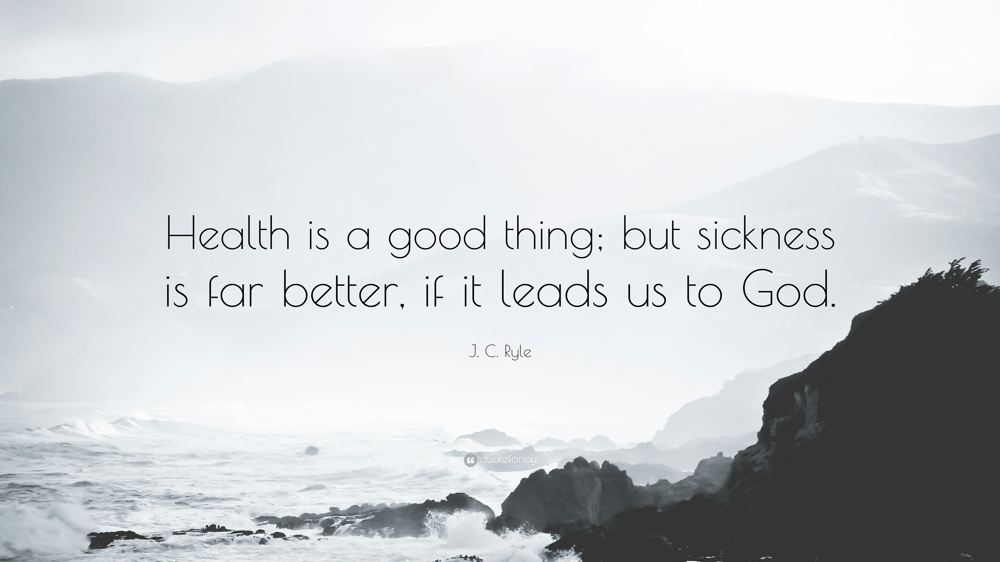
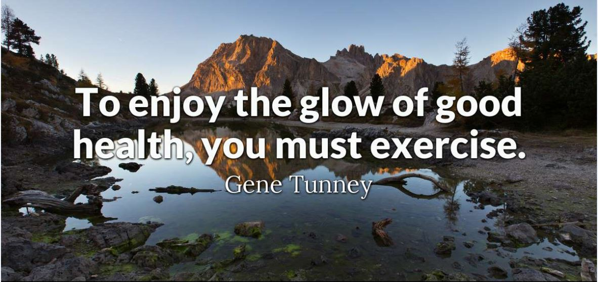
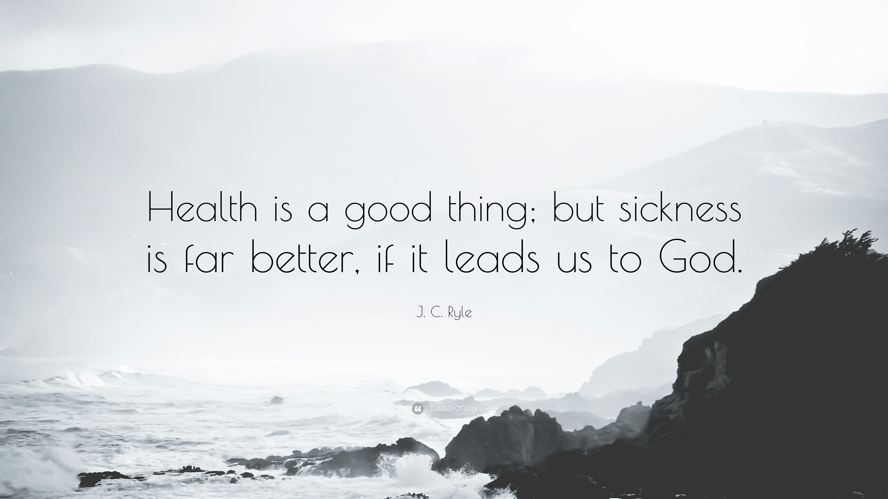
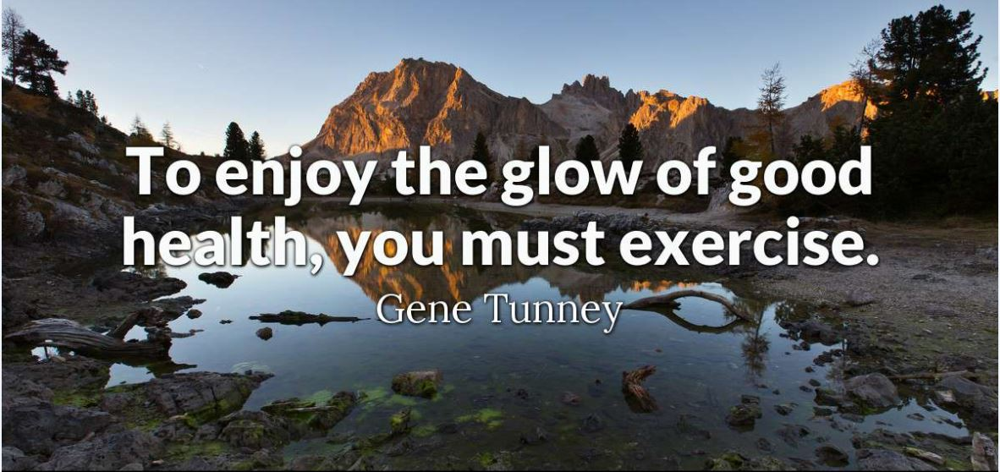

Introduction
No one disputes the fact that ‘Health is wealth’, and once health is impaired, money can be of any use. A healthy and nutritious food is important for nourishment. But, it is not very motivating to study, follow nutritious plan and consume food that is complete in all nutrients, due to various reasons. This website offers curated information and guidance on proper nutrition collected from various sources in an easily understandable way.
No one disputes the fact that ‘Health is wealth’, and once health is impaired, money can be of any use. A healthy and nutritious food is important for nourishment. But, it is not very motivating to study, follow nutritious plan and consume food that is complete in all nutrients, due to various reasons. This website offers curated information and guidance on proper nutrition collected from various sources in an easily understandable way.
Why Awareness?
Adequate and proper nutrition is an important aspect of a healthy lifestyle. Therefore, it is essential to promote an awareness of the nutrients contained in foods in relation to their roles in body maintenance, growth, reproduction, health, and disease prevention in humans. Talent, dedication and passion are precursors to greatness but right nutrition helps us to ensure that we have the right arsenal to suceed. Visit why nutrition awareness page to know more.
Adequate and proper nutrition is an important aspect of a healthy lifestyle. Therefore, it is essential to promote an awareness of the nutrients contained in foods in relation to their roles in body maintenance, growth, reproduction, health, and disease prevention in humans. Talent, dedication and passion are precursors to greatness but right nutrition helps us to ensure that we have the right arsenal to suceed. Visit why nutrition awareness page to know more.
Nutrition Simplified
We all know that food is important for us and food which is filled with nutrients,provides nourishment to our body. But the question that we need to ask ourselves is if we know all about the nutrients which provide us with this nourishment. Here we will try our best to answer that question by providing information like the classification of nutrients based on quantity and quality and also take a peak into concepts like BMI,waist circumference and growth charts.
We all know that food is important for us and food which is filled with nutrients,provides nourishment to our body. But the question that we need to ask ourselves is if we know all about the nutrients which provide us with this nourishment. Here we will try our best to answer that question by providing information like the classification of nutrients based on quantity and quality and also take a peak into concepts like BMI,waist circumference and growth charts.
Tools
We always hear about calories and also that the food we eat provides us with these calories. But its almost impossible for a common man to calculate the number of calories he recieves through food or how many he burns after a tiring workout without some resources. In this section we will briefly look into some helpful resourses like the cronometer,the guide published by the NIN and fitness apps like fitbit and strava.
We always hear about calories and also that the food we eat provides us with these calories. But its almost impossible for a common man to calculate the number of calories he recieves through food or how many he burns after a tiring workout without some resources. In this section we will briefly look into some helpful resourses like the cronometer,the guide published by the NIN and fitness apps like fitbit and strava.
Self-Assessment
In the self assessment page, we help you understand the needs and the care you need to take to keep body fit. You can understand different methods in which you can assess your own body and health through BMI, reference charts and other different materials which would guide you in assessing the calorie requirements, current health status, and what you need to do to improve.
In the self assessment page, we help you understand the needs and the care you need to take to keep body fit. You can understand different methods in which you can assess your own body and health through BMI, reference charts and other different materials which would guide you in assessing the calorie requirements, current health status, and what you need to do to improve.
Recommended Actions
In recommended actions we will know how to balance the calorie. It can be done in three ways weight gain, weight loss and weight maintenance. We need to equalize calorie intake and calorie expenditure. This can be done by reducing the calorie intake or increase the calorie expenditure.
In recommended actions we will know how to balance the calorie. It can be done in three ways weight gain, weight loss and weight maintenance. We need to equalize calorie intake and calorie expenditure. This can be done by reducing the calorie intake or increase the calorie expenditure.
 


